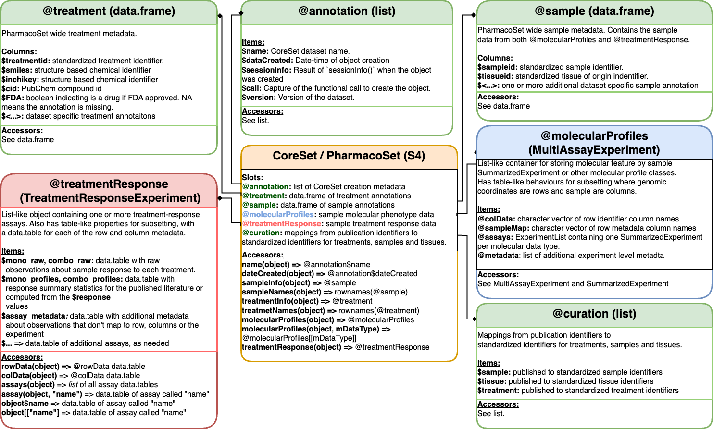
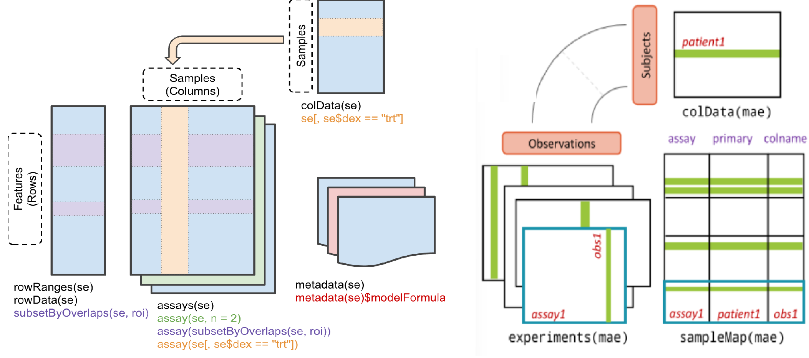
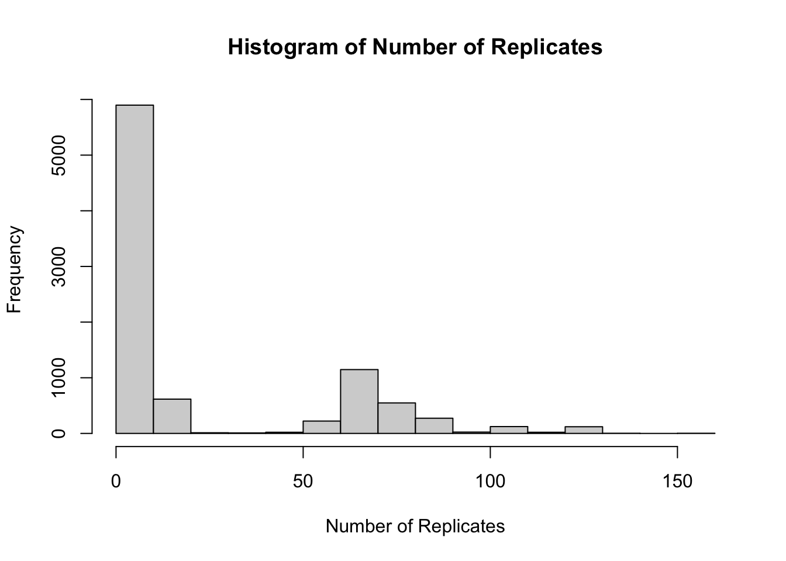
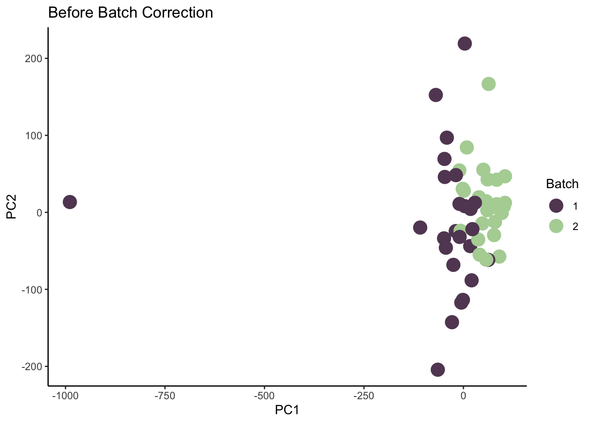
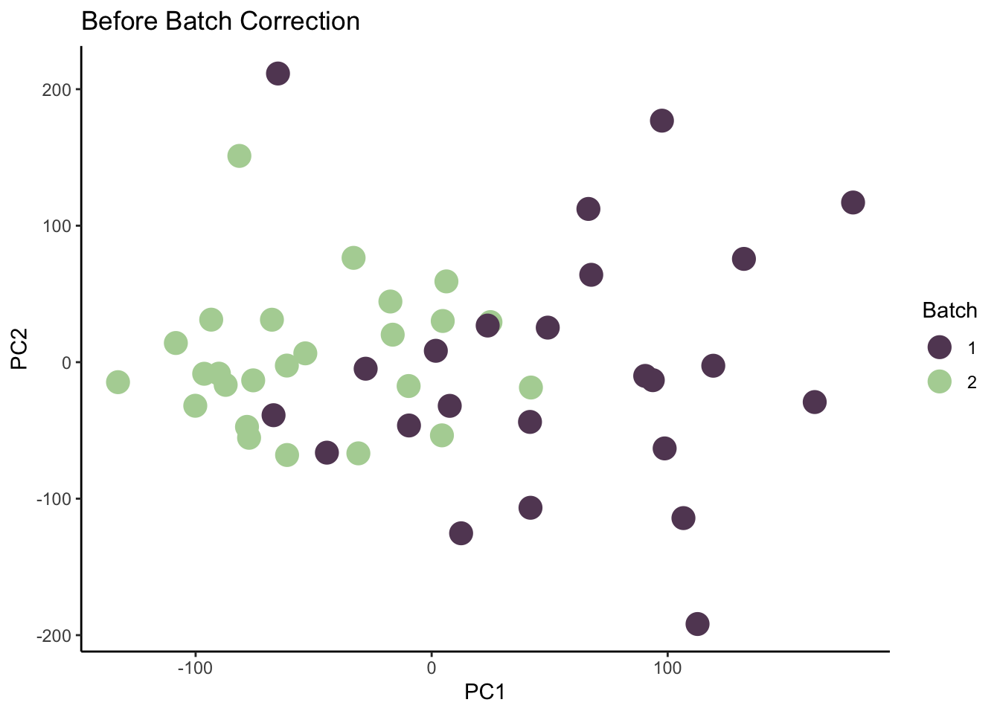
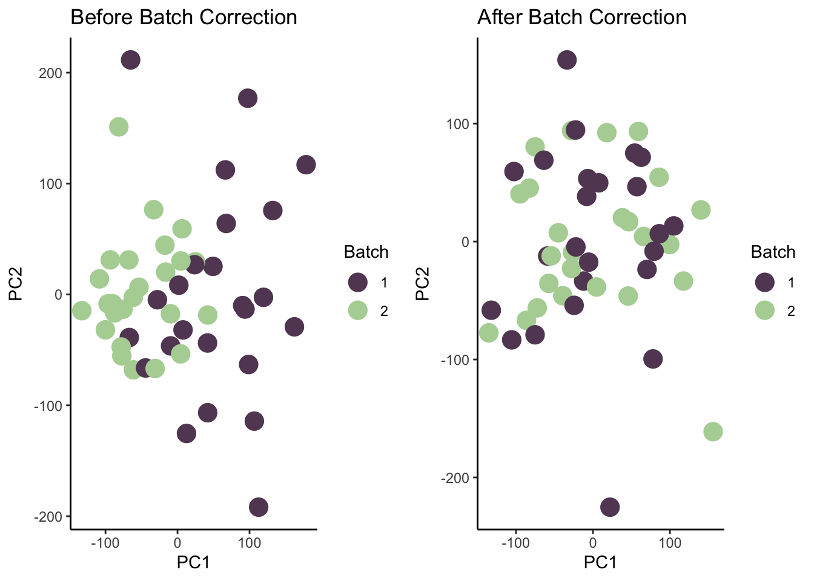

Module 2: Data Preparation for Pharmacogenomic Analysis
Lab
Overview
Instructor(s) Name and Contact Information
- Jermiah J. Joseph jermiah.joseph@uhn.ca
- Almas Khan almas.khan@uhn.ca
- Julia Nguyen julia.nguyen@uhn.ca
Learning Goals
- Understand the data structure of a
PharmacoSet - Learn how to access features and metadata from a PharmacoSet
- Learn how to plot batch effects using PCA and run correction method (SVA)
- Learn how to filter out outliers and missing values
Learning Objectives
- Describe the use cases for PharmacoGx in Pharmacogenomics
- Understand the structure of the
CoreSetandPharmacoSetclasses to facilitate their use in subsequent analyses - Download/load a
PharmacoSetusing PharmacoGx or orcestra.ca - Subset and filter a
PharmacoSetby samples and/or treatments - Access the molecular features, dose-response and metadata contained within the
PharmacoSet - Perform quality control on a
PharmacoSetby identifying and removing outliers and missing values - Perform batch correction on a
PharmacoSetusing thesvapackage
Setup
Use Cases for PharmacoGx
Downloading Data from orcestra.ca
available <- PharmacoGx::availablePSets() |>
data.table::as.data.table()
print(names(available))
#> [1] "Dataset Name" "Date Created" "PSet Name" "version" "type"
#> [6] "publication" "DOI" "Download"
print(available[, c("Dataset Name", "PSet Name", "version")])
#> Dataset Name PSet Name version
#> <char> <char> <char>
#> 1: GDSC GDSC_2020(v2-8.2) 2020(v2-8.2)
#> 2: FIMM FIMM_2016 2016
#> 3: Tavor Tavor_2020 2020
#> 4: NCI60 NCI60_2021 2021
#> 5: UHNBreast UHNBreast_2019 2019
#> 6: GDSC GDSC_2020(v1-8.2) 2020(v1-8.2)
#> 7: PRISM PRISM_2020 2020
#> 8: BeatAML BeatAML_2018 2018
#> 9: gCSI gCSI_2019 2019
#> 10: CTRPv2 CTRPv2_2015 2015
#> 11: GRAY GRAY_2017 2017
#> 12: CCLE CCLE_2015 2015
#> 13: PDTX PDTX_2019 2019
#> 14: GBM GBM_scr2 2021
#> 15: GBM GBM_scr3 2021
#> 16: NCISarcoma NCISarcoma_2015 2015
#> 17: TCL38 TCL38 2015The following function from PharmacoGx can be used to download any of the available PSets from orcestra.ca.
The command to do so is:
PharmacoGx::downloadPSet(
name = "CCLE_2015",
saveDir = "../psets", # change this directory as you see fit
timeout = 3600,
verbose = TRUE
)
# Note: this may take a while to download as the files are stored in
# Zenodo and are quite largeFor convenience and in the interest of time, we have created a PharmacoSet to be used in this tutorial. We will be interacting with this dataset for the remainder of the tutorial.
pset <- CBWWorkshop2024::dummy_pset
pset
#> <PharmacoSet>
#> Name: dummy_pset
#> Date Created: Tue Oct 15 23:31:41 2024
#> Number of samples: 50
#> Molecular profiles: <MultiAssayExperiment>
#> ExperimentList class object of length 2:
#> [1] rnaseq.tpm : SummarizedExperiment with 100 rows and 50 columns
#> [2] rnaseq.tpm.batch : SummarizedExperiment with 100 rows and 50 columns
#> Treatment response: <TreatmentResponseExperiment>
#> dim: 4847 52
#> assays(1): sensitivity
#> rownames(4847): 1e-07:Ixabepilone:1 1e-06:Ixabepilone:1 ... 1000:Nelarabine:1 4000:Ifosfamide:1
#> rowData(4): treatmentdose treatmentid tech_rep CONC1
#> colnames(52): 786-O:1 A-498:1 A-549:1 ... UACC-257:1 UACC-62:1 UO-31:1
#> colData(3): sampleid bio_rep PANEL
#> metadata(0): noneUnderstanding the PharmacoSet Data Structure
The PharmacoSet class is a container for pharmacogenomic data.
This pharmacogenomic data is typically generated from high-throughput screening experiments where cell lines are treated with a panel of drugs at multiple doses and the response is measured using a molecular assay.
Pharmacogenomic data is located in a PharmacoSet within its slots, which are accessed using the @ operator.
slotNames(pset)
#> [1] "treatmentResponse" "annotation" "molecularProfiles"
#> [4] "sample" "treatment" "datasetType"
#> [7] "perturbation" "curation" ### Metadata
Metadata for cell-lines (samples) and drugs (treatments) are stored in the sample and treatment slots, respectively.
These are data frames with rows corresponding to samples or treatments and columns corresponding to metadata fields. The metadata fields are typically a combination of data from the original data source, and curated data from external sources such as Cellosaurus,DrugBank, and PubChem.
View the sample slot
We can access the sampleNames of the PharmacoSet:
PharmacoGx::sampleNames(pset)
#> [1] "NCI-H23" "HOP-62" "SNB-75" "HL-60(TB)" "A-549"
#> [6] "SF268" "SNB-19" "SF295" "OVCAR-5" "U-251MG"
#> [11] "MCF-7" "MDA-MB-231" "MDA-MB-435" "BT-549" "SK-MEL-5"
#> [16] "MOLT-4" "DU145" "NCI-ADR-RES" "OVCAR-3" "COLO 205"
#> [21] "SK-OV-3" "CCRF-CEM" "SR" "IGROV-1" "SW620"
#> [26] "Hs 578T" "HCT 116" "UACC-62" "EKVX" "HCT 15"
#> [31] "OVCAR-8" "UACC-257" "SF539" "UO-31" "M14"
#> [36] "KM12" "T-47D" "Malme-3M" "Caki-1" "A-498"
#> [41] "SK-MEL-28" "RPMI-8226" "NCI-H460" "NCI-H322M" "NCI-H226"
#> [46] "K-562" "786-O" "SK-MEL-2" "HCC2998" "NCI-H522"To get all the metadata associated with the samples, we can access the sample slot:
pset@sample |> str()
#> 'data.frame': 50 obs. of 7 variables:
#> $ sampleid : chr "NCI-H23" "HOP-62" "SNB-75" "HL-60(TB)" ...
#> $ tissueid : chr "Lung" "Lung" "CNS/Brain" "Myeloid" ...
#> $ cellosaurus_disease : chr "Lung adenocarcinoma" "Lung adenocarcinoma" "Glioblastoma" "Acute myeloid leukemia" ...
#> $ cellosaurus_id : chr "CVCL_1547" "CVCL_1285" "CVCL_1706" "CVCL_A794" ...
#> $ NCI_ALMANAC.sampleid: chr "NCI-H23" "HOP-62" "SNB-75" "HL-60(TB)" ...
#> $ NCI_ALMANAC.disease : chr "Non-Small Cell Lung Cancer" "Non-Small Cell Lung Cancer" "CNS Cancer" "Leukemia" ...
#> $ pharmacodb_cid : chr "NCIH23_1085_2019" "HOP62_561_2019" "SNB75_1430_2019" "HL-60(TB)6502021_" ...We can see from the sample slot that there are 50 samples in this PharmacoSet.
View the treatment slot
Similar to the sample, we can access the treatmentNames of the PharmacoSet:
PharmacoGx::treatmentNames(pset) |> head()
#> [1] "Ixabepilone" "Clofarabine" "Dasatinib" "Vincristine" "Imiquimod"
#> [6] "Paclitaxel"To get all the metadata associated with the treatments, we can access the treatment slot:
pset@treatment |> str()
#> 'data.frame': 22 obs. of 3 variables:
#> $ treatmentid: chr "Ixabepilone" "Clofarabine" "Dasatinib" "Vincristine" ...
#> $ cid : int 6445540 119182 3062316 5978 57469 36314 13342 54611422 2141 176871 ...
#> $ inchikey : chr "FABUFPQFXZVHFB-PVYNADRNSA-N" "WDDPHFBMKLOVOX-UHFFFAOYSA-N" "ZBNZXTGUTAYRHI-UHFFFAOYSA-N" "" ...There are also 22 treatments used.
Molecular Profiles
In PharmacoGx, molecular profiles refer to any data that is measured on the samples in the PharmacoSet. This can include gene expression, copy number, mutation, or any other type of data that can be measured on a sample.
Each Molecular Data Type (mDataType) is stored in a SummarizedExperiment. All the SummarizedExperiment objects are stored in a container called a MultiAssayExperiment which can be accessed through the molecularProfiles slot.
MultiAssayExperiment and SummarizedExperiment

#### View the molecularProfiles Slot
pset@molecularProfiles
#> A MultiAssayExperiment object of 2 listed
#> experiments with user-defined names and respective classes.
#> Containing an ExperimentList class object of length 2:
#> [1] rnaseq.tpm: SummarizedExperiment with 100 rows and 50 columns
#> [2] rnaseq.tpm.batch: SummarizedExperiment with 100 rows and 50 columns
#> Functionality:
#> experiments() - obtain the ExperimentList instance
#> colData() - the primary/phenotype DataFrame
#> sampleMap() - the sample coordination DataFrame
#> `$`, `[`, `[[` - extract colData columns, subset, or experiment
#> *Format() - convert into a long or wide DataFrame
#> assays() - convert ExperimentList to a SimpleList of matrices
#> exportClass() - save data to flat filesTreatment Response
The treatment response data was traditionally stored in a list. To accelerate analysis, we have developed a new class called the TreatmentResponseExperiment (TRE) which has been specifically designed to handle high dimensional biological stimulus-response data.
View the treatmentResponse slot
pset@treatmentResponse
#> <TreatmentResponseExperiment>
#> dim: 4847 52
#> assays(1): sensitivity
#> rownames(4847): 1e-07:Ixabepilone:1 1e-06:Ixabepilone:1 ... 1000:Nelarabine:1 4000:Ifosfamide:1
#> rowData(4): treatmentdose treatmentid tech_rep CONC1
#> colnames(52): 786-O:1 A-498:1 A-549:1 ... UACC-257:1 UACC-62:1 UO-31:1
#> colData(3): sampleid bio_rep PANEL
#> metadata(0): noneTo view all the methods available for the TreatmentResponseExperiment class, we can use the methods function:
methods(class = "TreatmentResponseExperiment")
#> [1] [ [[ [[<-
#> [4] $ $<- aggregate
#> [7] assay assay<- assayCols
#> [10] assayIndex assayKeys assayNames
#> [13] assays assays<- buildComboProfiles
#> [16] coerce colData colData<-
#> [19] colIDs colMeta colnames
#> [22] computeZIPdelta dim dimnames
#> [25] endoaggregate getIntern idCols
#> [28] mergeAssays metadata metadata<-
#> [31] names reindex rowData
#> [34] rowData<- rowIDs rowMeta
#> [37] rownames show subset
#> [40] treatmentResponse<- updateObject
#> see '?methods' for accessing help and source codeSubsetting a PharmacoSet
Subset by sampleNames and/or treatmentNames
When subsetting a PharmacoSet object by sample names, both the MultiAssayExperiment and TreatmentResponseExperiment objects will be subsetted so all their internal Experiments only contain data for the samples of interest.
However, when subsetting by treatment names, only the TRE object will be subsetted.
PharmacoGx::subsetBySample(
pset,
sample = PharmacoGx::sampleNames(pset)[1:5]
)
#> <PharmacoSet>
#> Name: dummy_pset
#> Date Created: Tue Oct 15 23:31:41 2024
#> Number of samples: 5
#> Molecular profiles: <MultiAssayExperiment>
#> ExperimentList class object of length 2:
#> [1] rnaseq.tpm : SummarizedExperiment with 100 rows and 5 columns
#> [2] rnaseq.tpm.batch : SummarizedExperiment with 100 rows and 5 columns
#> Treatment response: <TreatmentResponseExperiment>
#> dim: 4440 4
#> assays(1): sensitivity
#> rownames(4440): 1e-07:Ixabepilone:1 1e-06:Ixabepilone:1 ... 1000:Nelarabine:1 4000:Ifosfamide:1
#> rowData(4): treatmentdose treatmentid tech_rep CONC1
#> colnames(4): A-549:1 HOP-62:1 NCI-H23:1 SNB-75:1
#> colData(3): sampleid bio_rep PANEL
#> metadata(0): none
PharmacoGx::subsetByTreatment(
pset,
treatment = PharmacoGx::treatmentNames(pset)[1:5]
)
#> <PharmacoSet>
#> Name: dummy_pset
#> Date Created: Tue Oct 15 23:31:41 2024
#> Number of samples: 50
#> Molecular profiles: <MultiAssayExperiment>
#> ExperimentList class object of length 2:
#> [1] rnaseq.tpm : SummarizedExperiment with 100 rows and 50 columns
#> [2] rnaseq.tpm.batch : SummarizedExperiment with 100 rows and 50 columns
#> Treatment response: <TreatmentResponseExperiment>
#> dim: 883 51
#> assays(1): sensitivity
#> rownames(883): 1e-07:Ixabepilone:1 1e-06:Ixabepilone:1 ... 7:Clofarabine:1 10:Clofarabine:1
#> rowData(4): treatmentdose treatmentid tech_rep CONC1
#> colnames(51): 786-O:1 A-498:1 A-549:1 ... UACC-257:1 UACC-62:1 UO-31:1
#> colData(3): sampleid bio_rep PANEL
#> metadata(0): noneSubsetting Using sample and treatment Metadata
The utility of the metadata slots in the PharmacoSet class.
unique(pset@sample$tissueid)
#> [1] "Lung" "CNS/Brain" "Myeloid"
#> [4] "Ovary/Fallopian Tube" "Breast" "Skin"
#> [7] "Lymphoid" "Prostate" "Bowel"
#> [10] "Kidney" "Pleura"
tissues_of_interest <- c("Kidney")
(samples_of_interest <- pset@sample[
pset@sample$tissueid %in% tissues_of_interest,
"sampleid"
]
)
#> [1] "UO-31" "Caki-1" "A-498" "786-O"
PharmacoGx::subsetBySample(
pset,
samples_of_interest
)
#> <PharmacoSet>
#> Name: dummy_pset
#> Date Created: Tue Oct 15 23:31:41 2024
#> Number of samples: 4
#> Molecular profiles: <MultiAssayExperiment>
#> ExperimentList class object of length 2:
#> [1] rnaseq.tpm : SummarizedExperiment with 100 rows and 4 columns
#> [2] rnaseq.tpm.batch : SummarizedExperiment with 100 rows and 4 columns
#> Treatment response: <TreatmentResponseExperiment>
#> dim: 4285 4
#> assays(1): sensitivity
#> rownames(4285): 1e-07:Ixabepilone:1 1e-06:Ixabepilone:1 ... 1000:Nelarabine:1 4000:Ifosfamide:1
#> rowData(4): treatmentdose treatmentid tech_rep CONC1
#> colnames(4): 786-O:1 A-498:1 Caki-1:1 UO-31:1
#> colData(3): sampleid bio_rep PANEL
#> metadata(0): noneA concise way to subset by sample in one step:
PharmacoGx::subsetBySample(
pset,
sample = pset@sample[
pset@sample$tissueid == "Kidney",
"sampleid"
]
)
#> <PharmacoSet>
#> Name: dummy_pset
#> Date Created: Tue Oct 15 23:31:41 2024
#> Number of samples: 4
#> Molecular profiles: <MultiAssayExperiment>
#> ExperimentList class object of length 2:
#> [1] rnaseq.tpm : SummarizedExperiment with 100 rows and 4 columns
#> [2] rnaseq.tpm.batch : SummarizedExperiment with 100 rows and 4 columns
#> Treatment response: <TreatmentResponseExperiment>
#> dim: 4285 4
#> assays(1): sensitivity
#> rownames(4285): 1e-07:Ixabepilone:1 1e-06:Ixabepilone:1 ... 1000:Nelarabine:1 4000:Ifosfamide:1
#> rowData(4): treatmentdose treatmentid tech_rep CONC1
#> colnames(4): 786-O:1 A-498:1 Caki-1:1 UO-31:1
#> colData(3): sampleid bio_rep PANEL
#> metadata(0): noneComputing Over a TreatmentResponseExperiment
The TreatmentResponseExperiment class has been designed to facilitate more than just storing data efficiently. Once the data is curated and stored safely inside our object, we are ready to start answering questions.
First, let’s extract the TRE to work with:
tre <- pset@treatmentResponse
show(tre)
#> <TreatmentResponseExperiment>
#> dim: 4847 52
#> assays(1): sensitivity
#> rownames(4847): 1e-07:Ixabepilone:1 1e-06:Ixabepilone:1 ... 1000:Nelarabine:1 4000:Ifosfamide:1
#> rowData(4): treatmentdose treatmentid tech_rep CONC1
#> colnames(52): 786-O:1 A-498:1 A-549:1 ... UACC-257:1 UACC-62:1 UO-31:1
#> colData(3): sampleid bio_rep PANEL
#> metadata(0): noneAggregating Over the TreatmentResponseExperiment
The aggregate function is a powerful tool that allows us to summarize the data in a TreatmentResponseExperiment object.
tre |>
aggregate(
assay = "sensitivity",
N = .N,
by = c("treatmentid", "treatmentdose", "sampleid", "bio_rep")
)
#> treatmentid treatmentdose sampleid bio_rep N
#> <char> <num> <char> <int> <int>
#> 1: Ixabepilone 1e-07 786-O 1 1
#> 2: Ixabepilone 1e-07 A-498 1 1
#> 3: Ixabepilone 1e-07 A-549 1 1
#> 4: Ixabepilone 1e-07 BT-549 1 1
#> 5: Ixabepilone 1e-07 COLO 205 1 1
#> ---
#> 9036: Ifosfamide 4e+03 T-47D 1 1
#> 9037: Ifosfamide 4e+03 U-251MG 1 1
#> 9038: Ifosfamide 4e+03 UACC-257 1 1
#> 9039: Ifosfamide 4e+03 UACC-62 1 1
#> 9040: Ifosfamide 4e+03 UO-31 1 1You can also use the subset function to subset the TreatmentResponseExperiment object before performing aggregate.
Additionally, you can even subset over the result of an aggregate operation.
tre |>
subset(treatmentid %in% c("Doxorubicin", "Ixabepilone")) |>
aggregate(
assay = "sensitivity",
N = .N,
by = c("treatmentid", "treatmentdose", "sampleid", "bio_rep")
) |>
subset(N > 1 & sampleid == "A-498")
#> treatmentid treatmentdose sampleid bio_rep N
#> <char> <num> <char> <int> <int>
#> 1: Ixabepilone 3e-05 A-498 1 2
#> 2: Doxorubicin 5e-05 A-498 1 102
#> 3: Ixabepilone 3e-04 A-498 1 2
#> 4: Doxorubicin 5e-04 A-498 1 102
#> 5: Ixabepilone 3e-03 A-498 1 10
#> 6: Doxorubicin 5e-03 A-498 1 122
#> 7: Ixabepilone 3e-02 A-498 1 8
#> 8: Doxorubicin 5e-02 A-498 1 122
#> 9: Ixabepilone 3e-01 A-498 1 8
#> 10: Doxorubicin 5e-01 A-498 1 122
#> 11: Doxorubicin 5e+00 A-498 1 102Plotting the Number of Replicates
The last two examples have shown that there are technical replicates in the data. We can visualize the number of replicates using a histogram.
tre |>
aggregate(
assay = "sensitivity",
N = .N,
by = c("treatmentid", "treatmentdose", "sampleid", "bio_rep")
) |>
with(
expr = hist(
N,
main = "Histogram of Number of Replicates",
xlab = "Number of Replicates"
)
)
Endoaggregate
In the interest of computation time and resources, we want to summarize the technical replicates into a single value and store that result inside the TreatmentResponseExperiment.
For this, we have developed the endoaggregate method.
This method will perform similar to the aggregate method, but will return a TreatmentResponseExperiment object with the summarized data as another assay.
new_tre <- tre |>
endoaggregate(
N = .N,
assay = "sensitivity",
target = "tech_rep_counts",
by = c("treatmentid", "treatmentdose", "sampleid", "bio_rep")
)
show(new_tre)
#> <TreatmentResponseExperiment>
#> dim: 4847 52
#> assays(2): sensitivity tech_rep_counts
#> rownames(4847): 1e-07:Ixabepilone:1 1e-06:Ixabepilone:1 ... 1000:Nelarabine:1 4000:Ifosfamide:1
#> rowData(4): treatmentdose treatmentid tech_rep CONC1
#> colnames(52): 786-O:1 A-498:1 A-549:1 ... UACC-257:1 UACC-62:1 UO-31:1
#> colData(3): sampleid bio_rep PANEL
#> metadata(0): none
head(new_tre$tech_rep_counts[order(-N)])
#> treatmentdose treatmentid sampleid bio_rep N
#> <num> <char> <char> <int> <int>
#> 1: 0.005 Doxorubicin HCT 116 1 153
#> 2: 0.050 Doxorubicin HCT 116 1 153
#> 3: 0.500 Doxorubicin HCT 116 1 153
#> 4: 0.005 Doxorubicin NCI-ADR-RES 1 132
#> 5: 0.050 Doxorubicin NCI-ADR-RES 1 132
#> 6: 0.500 Doxorubicin NCI-ADR-RES 1 132Let’s use this method to summarize the technical replicates by taking the mean of the viability values for each unique combination of treatmentid, treatmentdose, sampleid, and bio_rep.
tre_avged <- tre |>
endoaggregate(
viability = mean(viability),
assay = "sensitivity",
target = "mean_sensitivity",
by = c("treatmentid", "treatmentdose", "sampleid", "bio_rep")
)
str(tre_avged$mean_sensitivity)
#> Classes 'data.table' and 'data.frame': 9040 obs. of 5 variables:
#> $ treatmentdose: num 1e-07 1e-07 1e-07 1e-07 1e-07 1e-07 1e-07 1e-07 1e-07 1e-07 ...
#> $ treatmentid : chr "Ixabepilone" "Ixabepilone" "Ixabepilone" "Ixabepilone" ...
#> $ sampleid : chr "786-O" "A-498" "A-549" "BT-549" ...
#> $ bio_rep : int 1 1 1 1 1 1 1 1 1 1 ...
#> $ viability : num 98 99.7 99.3 96 103.7 ...
#> - attr(*, "sorted")= chr [1:4] "treatmentdose" "treatmentid" "sampleid" "bio_rep"
#> - attr(*, ".internal.selfref")=<externalptr>Computing Profiles
tre_profiled <- tre_avged |>
endoaggregate(
{
fit <- PharmacoGx::logLogisticRegression(treatmentdose, viability)
IC50 <- PharmacoGx::computeIC50(treatmentdose, Hill_fit = fit)
AAC <- PharmacoGx::computeAUC(treatmentdose, Hill_fit = fit, area.type = "Fitted")
list(
HS = fit[["HS"]], E_inf = fit[["E_inf"]] / 100, EC50 = fit[["EC50"]],
Rsq = as.numeric(unlist(attributes(fit))),
AAC = AAC,
IC50 = IC50
)
},
assay = "mean_sensitivity",
subset = treatmentid %in% rowData(tre_avged)[, unique(treatmentid)][1:3],
by = c("treatmentid", "sampleid", "bio_rep"),
enlist = FALSE,
target = "profiles"
)If we didn’t subset the TRE this computation will have taken a while since it is a computationally intensive operation and run on a single thread.
Under the hood, the CoreGx package performs the aggregation. To speed up computation, it provides an nthread parameter to parallelize the computation.
To determine a safe, and optimal number of threads to use, we can use the CoreGx::optimizeCoreGx function which will tell us a safe number of threads.
Note
The following two code chunks will not be evaluated in this vignette as it may take some time.
Depending on your device, this number may vary. Let’s use a conservative number of threads for this example.
THREADS <- 6 # github runners provide 2c
tre_profiled <- tre_avged |>
endoaggregate(
{
fit <- PharmacoGx::logLogisticRegression(treatmentdose, viability)
IC50 <- PharmacoGx::computeIC50(treatmentdose, Hill_fit = fit)
AAC <- PharmacoGx::computeAUC(treatmentdose, Hill_fit = fit, area.type = "Fitted")
list(
HS = fit[["HS"]], E_inf = fit[["E_inf"]] / 100, EC50 = fit[["EC50"]],
Rsq = as.numeric(unlist(attributes(fit))),
AAC = AAC,
IC50 = IC50,
mindose = min(treatmentdose),
maxdose = max(treatmentdose),
numdose = length(unique(treatmentdose)),
minviability = min(viability),
maxviability = max(viability)
)
},
assay = "mean_sensitivity",
by = c("treatmentid", "sampleid", "bio_rep"),
enlist = FALSE,
target = "profiles",
nthread = THREADS
)Let’s look at the profiles we have computed:
show(tre_profiled)
#> <TreatmentResponseExperiment>
#> dim: 4847 52
#> assays(3): sensitivity mean_sensitivity profiles
#> rownames(4847): 1e-07:Ixabepilone:1 1e-06:Ixabepilone:1 ... 1000:Nelarabine:1 4000:Ifosfamide:1
#> rowData(4): treatmentdose treatmentid tech_rep CONC1
#> colnames(52): 786-O:1 A-498:1 A-549:1 ... UACC-257:1 UACC-62:1 UO-31:1
#> colData(3): sampleid bio_rep PANEL
#> metadata(0): none
tre_profiled$profiles
#> Key: <treatmentid, sampleid, bio_rep>
#> treatmentid sampleid bio_rep HS E_inf EC50 Rsq AAC
#> <char> <char> <int> <num> <num> <num> <num> <num>
#> 1: Ixabepilone 786-O 1 1 0.22057530 0.03 0.9794689 12.531587
#> 2: Ixabepilone A-498 1 1 0.31290066 0.03 0.9789242 11.047180
#> 3: Ixabepilone A-549 1 1 0.14355321 0.03 0.9457645 13.769947
#> 4: Ixabepilone BT-549 1 1 0.20976649 0.03 0.9608561 12.705370
#> 5: Ixabepilone CCRF-CEM 1 1 0.02700157 0.03 0.8583904 25.321277
#> ---
#> 147: Vinblastine T-47D 1 1 0.54684798 0.05 0.3701465 5.404228
#> 148: Vinblastine U-251MG 1 1 0.23576667 0.01 0.5443226 19.888382
#> 149: Vinblastine UACC-257 1 1 0.50895401 0.05 0.3843545 5.856146
#> 150: Vinblastine UACC-62 1 1 0.31347623 0.01 0.5809319 17.866071
#> 151: Vinblastine UO-31 1 1 0.68541114 0.10 0.6336420 2.367176
#> IC50
#> <num>
#> 1: 0.05368172
#> 2: 0.08017131
#> 3: 0.04208202
#> 4: 0.05168252
#> 5: 0.03171258
#> ---
#> 147: NA
#> 148: 0.01892267
#> 149: NA
#> 150: 0.02680624
#> 151: NAQuality Control of Pharmacogenomic Datasets
For the remainder of the lab, we will go over some quick case scenarios that require quality control. We will load in new molecular profile.
Checking for Missing Values
# get molecular profile
tpm_matrix <- pset@molecularProfiles[["rnaseq.tpm.batch"]] |> assay() |> as.data.frame()
tpm_matrix[1:5,1:5]
#> NCI-H23 HOP-62 SNB-75 HL-60(TB) A-549
#> GENE001 90.5370190 75.59677 104.525210 42.18450 9.391661
#> GENE002 75.5065358 22.05942 NA NA 82.203007
#> GENE003 85.2218882 103.63729 8.646855 86.64833 42.742828
#> GENE004 0.0749728 89.58816 19.705347 45.51081 75.588726
#> GENE005 57.0379889 80.19416 92.440089 53.37649 66.238551
# get metadata
meta <- pset@molecularProfiles[["rnaseq.tpm.batch"]] |> colData()
meta |> head()
#> DataFrame with 6 rows and 2 columns
#> sampleid batchid
#> <character> <numeric>
#> NCI-H23 NCI-H23 1
#> HOP-62 HOP-62 1
#> SNB-75 SNB-75 1
#> HL-60(TB) HL-60(TB) 2
#> A-549 A-549 2
#> SF268 SF268 2For this exercise, we purposely put in a gene with many missing values. Let’s look for this gene.
The code below will quantify the number of NA values in each row (gene).
apply(tpm_matrix, 1, function(x) sum(is.na(x))) |> head()
#> GENE001 GENE002 GENE003 GENE004 GENE005 GENE006
#> 0 25 0 0 0 0
# tre_profiled$profiles
# TODO: add code to make box plots for AAC and IC50 per drug# print only genes with NA values
sum_NA <- apply(tpm_matrix, 1, function(x) sum(is.na(x)))
sum_NA[sum_NA > 0]
#> GENE002
#> 25We see that GENE002 has 25 NA values. It is important to consider the proportion of NA values relative to the number of observations. We can quickly calculate the proportion:
num_NA <- sum_NA[sum_NA > 0] |> unname()
num_observations <- ncol(tpm_matrix)
# get proportion
num_NA / num_observations
#> [1] 0.5Now we know that 50% of samples have an NA value rather than an expression level for GENE002. This can be indicative of some technical issue. Let’s remove this gene from downstream analysis.
tpm_matrix <- tpm_matrix[-which(rownames(tpm_matrix) == "GENE002"), ]
any(is.na(tpm_matrix))
#> [1] FALSEIn the last line of code, we check if there were any remaining NA values. Since there are none, we can move on to visualizing our data.
Principal Component Analysis for Outlier Removal
Let’s quickly take a look at our expression matrix again.
tpm_matrix[1:5, 1:5]
#> NCI-H23 HOP-62 SNB-75 HL-60(TB) A-549
#> GENE001 90.5370190 75.59677 104.525210 42.18450 9.391661
#> GENE003 85.2218882 103.63729 8.646855 86.64833 42.742828
#> GENE004 0.0749728 89.58816 19.705347 45.51081 75.588726
#> GENE005 57.0379889 80.19416 92.440089 53.37649 66.238551
#> GENE006 26.4142662 74.16214 88.222117 96.38433 44.452740The expression matrix is currently formatted such that the features (genes) are the rows and the samples (cells) are the columns.
Since we want to do PCA to visualize the samples, we need to transpose the matrix so that the attributes of the samples (genes) are the columns instead.
t_tpm_matrix <- tpm_matrix |>
t() |>
as.data.frame()
t_tpm_matrix[1:5, 1:5]
#> GENE001 GENE003 GENE004 GENE005 GENE006
#> NCI-H23 90.537019 85.221888 0.0749728 57.03799 26.41427
#> HOP-62 75.596766 103.637293 89.5881605 80.19416 74.16214
#> SNB-75 104.525210 8.646855 19.7053470 92.44009 88.22212
#> HL-60(TB) 42.184495 86.648331 45.5108051 53.37649 96.38433
#> A-549 9.391661 42.742828 75.5887260 66.23855 44.45274Once the expression matrix is in the correct format, we can perform PCA using the
prcomp function.
org_pca <- prcomp(t_tpm_matrix)$x |> as.data.frame()
print(dim(org_pca))
#> [1] 50 50
org_pca[1:5, 1:5]
#> PC1 PC2 PC3 PC4 PC5
#> NCI-H23 -44.039730 -45.92050 63.97547 -9.390331 42.39060
#> HOP-62 -9.862044 10.97767 -90.24025 40.301276 -27.50330
#> SNB-75 16.981835 -43.81072 -16.12549 -1.423588 -42.08150
#> HL-60(TB) 83.651364 10.58870 59.28436 -24.431547 6.36504
#> A-549 8.510913 84.27694 59.59322 -9.085760 29.08710To visualize the data, we plot the first two principal components (PCs).
# add batch labels
org_pca$Batch <- meta$batchid[match(rownames(org_pca), meta$sampleid)] |> as.factor()
# plot
p1 <- ggplot(org_pca) +
geom_point(aes(x = PC1, y = PC2, color = Batch), size = 5) +
scale_color_manual(values = c("#624763", "#B1D3A3")) +
theme_classic() +
ggtitle("Before Batch Correction")
p1
There is a very obvious outlier in our data. We can quantitatively identify this outlier by identifying samples that lie beyond a threshold of 1.5 * IQR of the first and fourth quartiles.
# extract PC scores for given PC
scores <- org_pca[["PC1"]]
# compute IQR of given PC
iqr <- IQR(scores)
# compute upper and lower thresholds
upp_thres <- quantile(scores, 0.75) + 1.5 * iqr
low_thres <- quantile(scores, 0.25) - 1.5 * iqr
# print samples with values beyond threshold
outlier <- rownames(org_pca)[which(scores < low_thres | scores > upp_thres)]
paste("Outlier for PC1:", outlier) |> print()
#> [1] "Outlier for PC1: T-47D"Let’s remove T-47D and re-plot our data.
# remove outlier
outlier <- "T-47D"
tpm_matrix[[outlier]] <- NULL
# redo PCA and plotting
org_pca <- prcomp(t(tpm_matrix))$x |> as.data.frame()
org_pca$Batch <- meta$batchid[match(rownames(org_pca), meta$sampleid)] |> as.factor()
p1 <- ggplot(org_pca) +
geom_point(aes(x = PC1, y = PC2, color = Batch), size = 5) +
scale_color_manual(values = c("#624763", "#B1D3A3")) +
theme_classic() +
ggtitle("Before Batch Correction")
p1
Now that the outlier is removed, we have a better visualization of the data. It is very evident that the data points (samples) tend to cluster by batch. This is indicative of a potential batch effect.
Adjusting for Known Batches
When we have a known batch, we can adjust for it directly. One method is to use the ComBat() function from the sva package.
# adjust for known batch
adj_tpm_matrix <- ComBat(
dat = tpm_matrix,
batch = as.factor(meta$batchid[match(colnames(tpm_matrix), meta$sampleid)]),
par.prior = TRUE,
prior.plots = FALSE
)
#> Found2batches
#> Adjusting for0covariate(s) or covariate level(s)
#> Standardizing Data across genes
#> Fitting L/S model and finding priors
#> Finding parametric adjustments
#> Adjusting the Data
adj_tpm_matrix[1:5, 1:5]
#> NCI-H23 HOP-62 SNB-75 HL-60(TB) A-549
#> GENE001 81.991219 68.65465 94.477925 46.14868 9.844954
#> GENE003 78.009018 94.55152 9.221893 94.18421 46.353576
#> GENE004 2.112512 81.72158 19.570898 48.84136 82.434411
#> GENE005 53.126927 73.84929 84.808130 57.36965 71.508314
#> GENE006 25.252026 67.80845 80.339726 106.46140 48.702080We can now perform PCA and visualize on our adjusted TPM counts matrix. We will compare the results to the original PCA visualization.
Don’t forget to transpose the adjusted counts matrix!
# perform PCA on adjusted matrix
adj_pca <- prcomp(t(adj_tpm_matrix))$x |> as.data.frame()
adj_pca$Batch <- meta$batchid[match(rownames(adj_pca), meta$sampleid)] |> as.factor()
# create scatter plot
p2 <- ggplot(adj_pca) +
geom_point(aes(x = PC1, y = PC2, color = Batch), size = 5) +
scale_color_manual(values = c("#624763", "#B1D3A3")) +
theme_classic() +
ggtitle("After Batch Correction")
# plot both plots side by side for comparison
ggarrange(p1, p2, ncol = 2)
For downstream pharmacogenomic analysis (or any other bioinformatic analysis), the batch-corrected expression matrix should be used.
For downstream pharmacogenomic analysis (or any other bioinformatic analysis), the batch-corrected expression matrix should be used.
Lab Completed!
Congratulations! You have completed Lab 2!